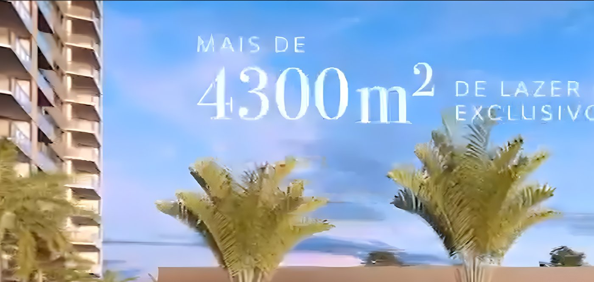
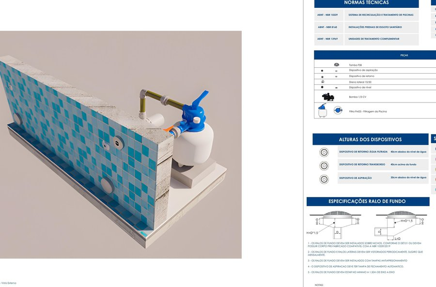
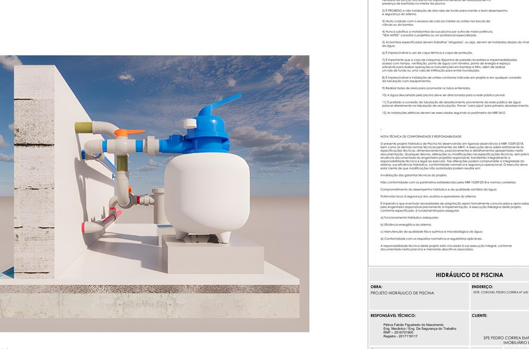

A 4njos desenvolve projetos hidráulicos de piscinas residenciais, comerciais e condominiais em metodologia BIM — do memorial de cálculo à documentação técnica, com conformidade normativa e responsabilidade técnica formalizada em cada etapa.
Sem dispersão de escopo — a 4njos atua exclusivamente com o dimensionamento e a documentação técnica de sistemas hidráulicos de piscinas.
Projetos para residências unifamiliares, com dimensionamento sob medida para o espaço, o uso e as preferências do cliente.
Hotéis, clubes e empreendimentos comerciais — projetos dimensionados para maior taxa de ocupação e uso intensivo.
Piscinas de uso coletivo, com os requisitos adicionais de segurança e acessibilidade que essa tipologia exige.
Cada projeto segue um protocolo técnico estruturado — da coleta de dados à emissão final — com rastreabilidade completa entre cálculos, desenhos e especificações.
Modelagem completa dos sistemas hidráulicos — compatibilização, quantitativos e documentação gerados a partir de um único modelo consistente.
Dimensionamento fundamentado em NBR 10339, NBR 5410 e demais normas técnicas aplicáveis — cada premissa registrada e rastreável.
Vazão, tubulações e AMT calculados e justificados por escrito — não apenas o resultado, mas o raciocínio técnico por trás dele.
Briefing, memorial, modelagem, verificação e validação técnica seguem um fluxo fixo — sem etapas puladas, sem pendências esquecidas.
Parcela significativa desses acidentes está associada a sistemas de sucção sem proteção adequada — situações tecnicamente evitáveis com um projeto bem dimensionado.
Na 4njos, cada projeto segue as exigências de segurança da NBR 10339:2018 desde o memorial de cálculo.
Cinco fases sequenciais garantem qualidade e rastreabilidade em qualquer projeto, do mais simples ao mais complexo.
Coleta de dados do cliente e do projeto.
Cálculos conforme as NBRs aplicáveis.
Modelagem BIM, desenhos e especificações.
Checklist interno + validação do engenheiro responsável.
Documentação técnica completa e formalizada.
Projeto hidráulico completo em metodologia BIM: modelagem de subsistemas, casa de máquinas, dispositivos de segurança e documentação técnica integrada.



Construtoras, engenheiros, arquitetos e proprietários — fale diretamente com quem desenvolve o projeto, do briefing à entrega.